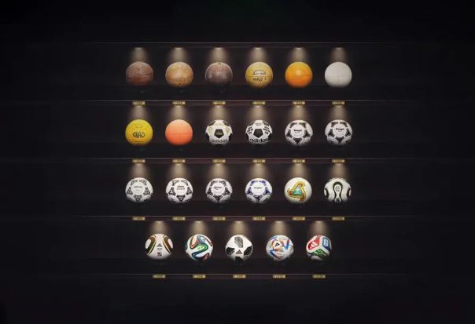
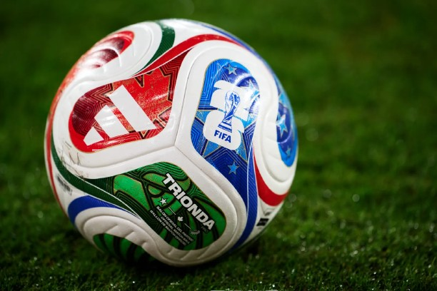

Los balones más icónicos y estéticamente valorados en la historia de los mundiales
Los balones más icónicos y estéticamente valorados de los mundiales incluyen el Tango (1978) por su diseño clásico, el Azteca (1986) por sus detalles culturales, el Tricolore (1998) por introducir color, y el Fevernova (2002) por su diseño futurista. Otros favoritos son el colorido Brazuca (2014) y el elegante Teamgeist (2006). Aquí te presentamos un resumen de los más destacados por su belleza y diseño:
-
Telstar (México 1970): El diseño clásico de 32 paneles blancos y negros, creado para mejorar la visibilidad en televisión, marcando un hito en la historia.
-
Tango Argentina (1978): Considerado por muchos como uno de los más elegantes, introdujo tríadas que creaban círculos perfectos, icónico del diseño de finales de los 70.
-
Azteca (México 1986): El primero sintético, incorporando diseños de grecas inspirados en la cultura mexicana.
-
Tricolore (Francia 1998): Rompió la tradición del blanco y negro, incorporando los colores azul, blanco y rojo de la bandera francesa, siendo el primero con colores.
-
Fevernova (Corea/Japón 2002): Conocido por su diseño vanguardista de turbinas con colores dorados y rojos, inspirado en la cultura asiática.
-
Teamgeist (Alemania 2006): Destacó por su diseño futurista con solo 14 paneles, con toques dorados en la versión final.
-
Brazuca (Brasil 2014): Muy querido por sus colores vibrantes y su diseño dinámico, considerado uno de los más estables.
Los balones más vendidos en la historia de los mundiales
Los balones más vendidos en la historia de los mundiales son el Brazuca (Brasil 2014) y el Jabulani (Sudáfrica 2010), ambos destacando por sus altas ventas globales. El Brazuca es frecuentemente citado como el más vendido, mientras que el Jabulani, a pesar de las críticas de los jugadores por su trayectoria, fue un favorito en ventas.
-
Brazuca (2014): Conocido por su diseño colorido y alta popularidad comercial.
-
Jabulani (2010): Muy popular entre los coleccionistas y fans, famoso por su diseño esférico "perfecto".
-
Fevernova (2002): Recordado por su diseño icónico y rendimiento en Corea/Japón.
-
Azteca (1986): Icónico por ser el primero fabricado con materiales sintéticos.
- Telstar (1970): El diseño clásico en blanco y negro, base para el reconocimiento mundial de los balones.
 Esta imagen fue tomada de la siguiente dirección:
Enlace a la imagen
Esta imagen fue tomada de la siguiente dirección:
Enlace a la imagen